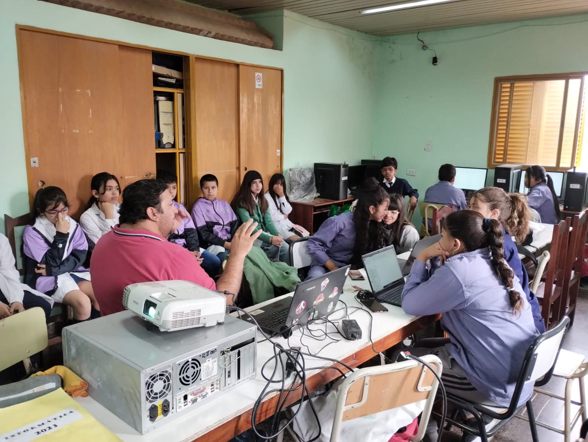
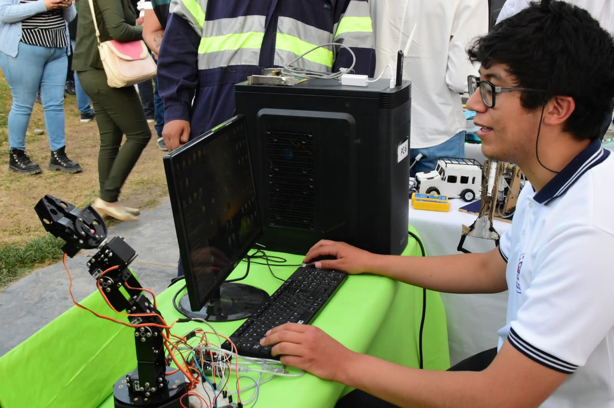
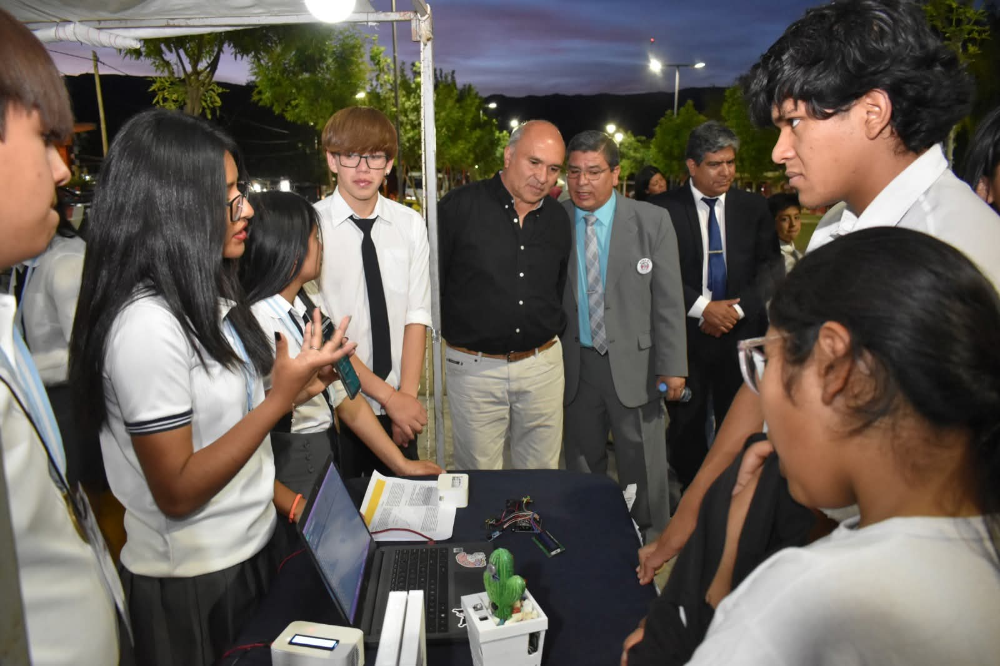
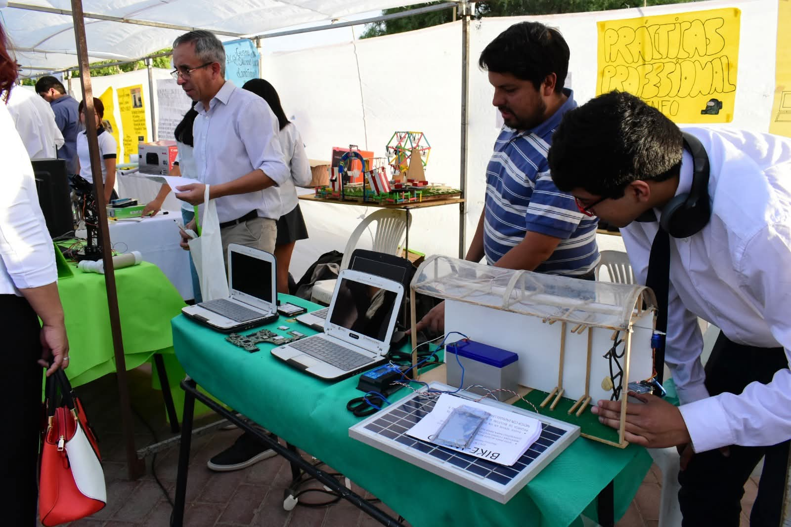
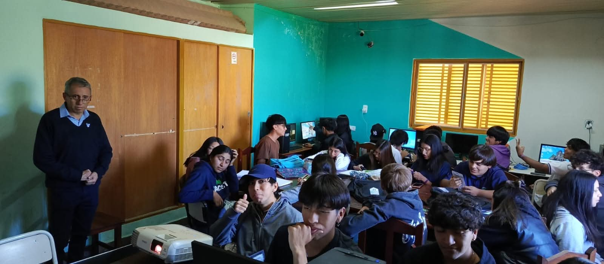
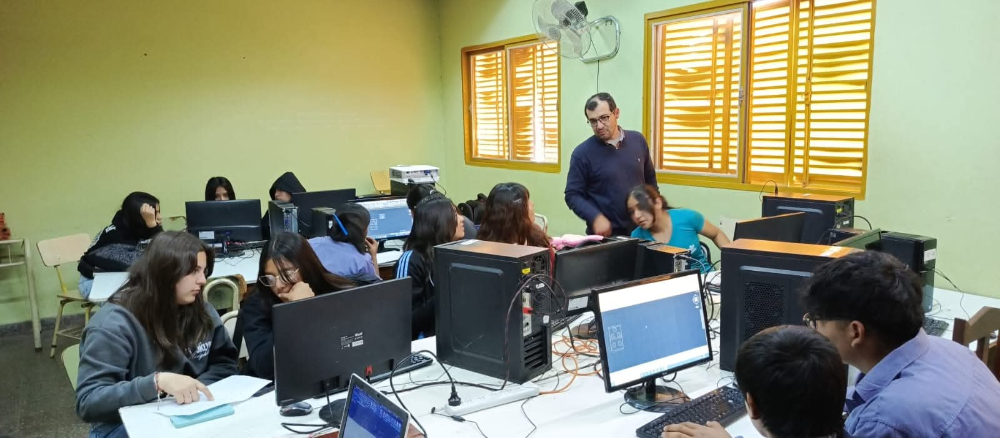
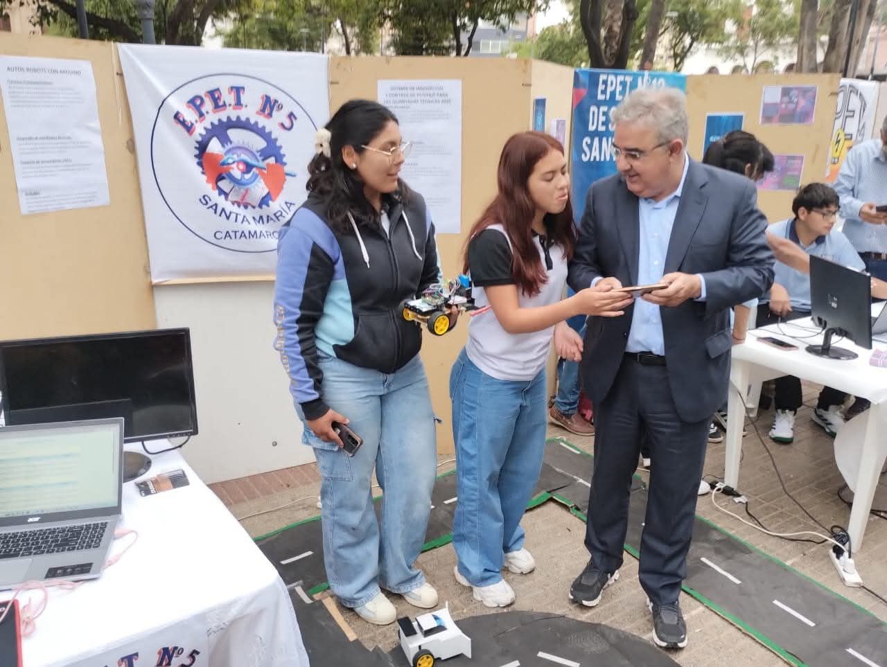
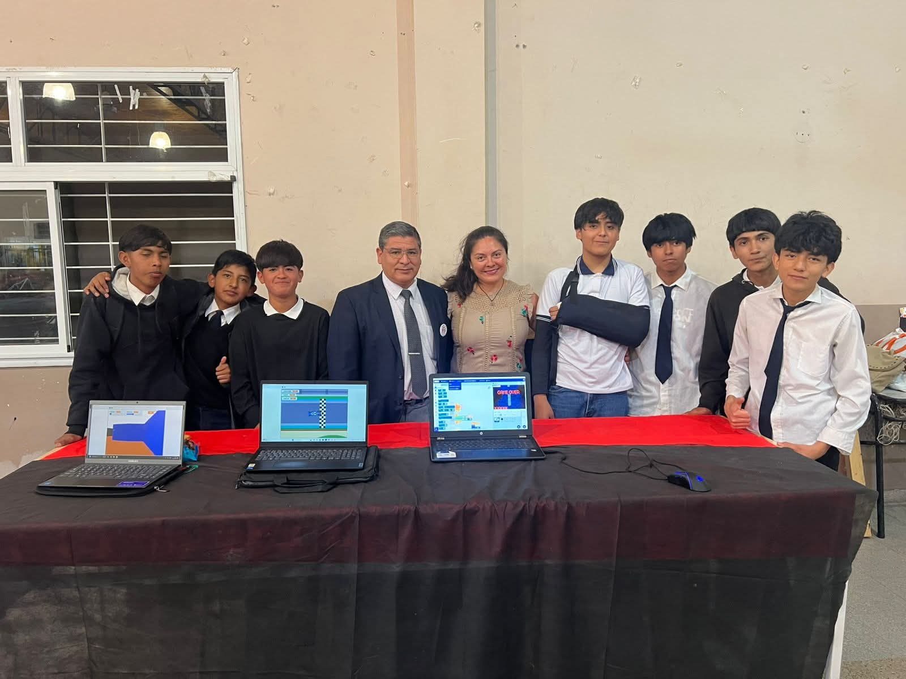
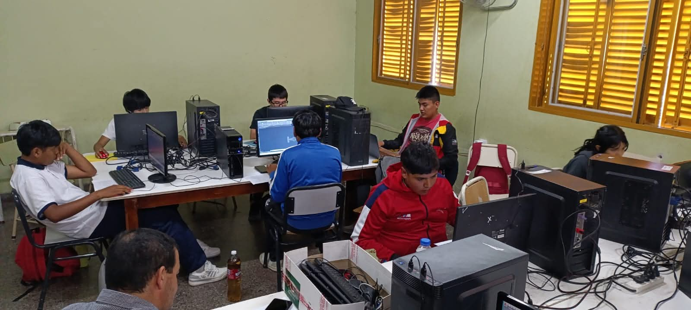

Plan de estudio
Una trayectoria técnica con base práctica
Durante los siete años de formación, los estudiantes desarrollan competencias técnicas, capacidad de resolución de problemas y experiencia concreta en laboratorio.
Una formación pensada para quienes quieren aprender sistemas, soporte, hardware, software y herramientas digitales con una mirada práctica y actual.

Formación aplicada
Clases prácticas, simulaciones, soporte técnico y una base sólida para insertarse en el mundo tecnológico o seguir estudiando.
Plan de estudio
Durante los siete años de formación, los estudiantes desarrollan competencias técnicas, capacidad de resolución de problemas y experiencia concreta en laboratorio.
Perfil del egresado
El Técnico en Informática está preparado para desempeñarse en distintos entornos laborales y también para seguir creciendo en estudios superiores o proyectos propios.
Soporte
El estudiante aprende a realizar mantenimiento preventivo y correctivo de computadoras, diagnosticar fallas, instalar y configurar equipos, reconocer componentes de hardware y resolver problemas de software con criterio técnico.
Sistemas
La modalidad desarrolla la comprensión de sistemas informáticos, la programación, la instalación y configuración de programas, el uso de sistemas operativos y la aplicación de herramientas digitales para resolver tareas concretas.
Datos
Se trabaja con el almacenamiento, la organización, la administración y la protección de datos, utilizando bases de datos y desarrollando nociones básicas de seguridad de la información para cuidar la calidad y la disponibilidad de la información.
Redes
El alumnado comprende la conexión entre computadoras y dispositivos, la configuración básica de redes, el uso de recursos compartidos y los conceptos de conectividad que permiten comunicar equipos y compartir información de manera organizada.
Futuro
El perfil del egresado contempla la aplicación de conocimientos tecnológicos, la adaptación a nuevas herramientas, la colaboración en equipo, la resolución de problemas y la formación continua como pilares para seguir desarrollándose en el mundo digital.
Laboratorio y prácticas
Los estudiantes cuentan con laboratorio equipado para realizar prácticas profesionalizantes, simulaciones de empresas virtuales y experiencias cercanas al mundo del trabajo.
Esta modalidad combina contenidos técnicos con trabajo en equipo, criterio de análisis y una mirada orientada a la mejora continua.
Salida laboral
Nuestros egresados pueden integrarse al mercado laboral en áreas vinculadas a las TICs y también continuar su recorrido académico en institutos o universidades.
Fortalezas de la modalidad
Instalaciones
El laboratorio y los espacios de trabajo acompañan una modalidad que necesita experimentar, probar, corregir y construir soluciones.








Imagen 1 de 8